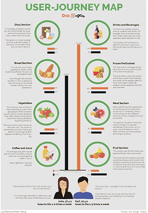
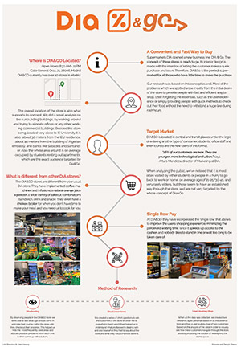
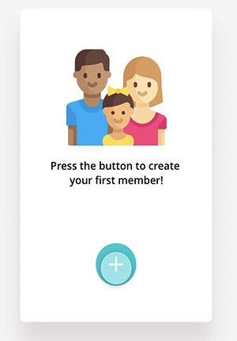

User Experience Design



About this project
The aim of the project was to observe and spot problems with user experience design within a place of our choice. We decided to focus on DIA supermarket located on Calle General Oraa, 21. The project was divided into phases of research, observations and design. The research part was done through internet and interviews. The observations included shadowing and interviews, as well as user journey maps. The design part was illustrate the gathered information in a form of two posters, also outlining the places problems. We also then developed an app for user flow observation.